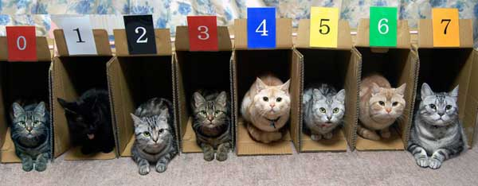

Массивы
В любом языке программирования используются массивы, удобные для работы с большим количеством однотипных данных. Если вам нужно обработать сотни переменных, то вызывать каждую по отдельности становится муторным занятием. В таких случаях проще применить массив.
Для наглядности представьте себе собранные в один ряд пустые коробки. В каждую коробочку можно положить что-то одного типа, например, котов. Теперь, даже не зная их по именам, вы можете выполнить команду Накормить кота из 3 коробки. Сравните с командой Накормить Рыжика. Чувствуете разницу?
Вам не обязательно знать котов по именам, но вы всё равно сможете справиться с заданием. Завтра в этих коробках могут оказаться другие коты, но это не составит для вас проблемы, главное знать номер коробки, который называется индексом.

Массивом называется именованное множество переменных одного типа. Каждая переменная в данном массиве называется элементом массива. Чтобы сослаться на определенный элемент в массиве нужно знать имя массива в соединении с целым значением, называемым индексом. Индекс указывает на позицию конкретного элемента относительно начала массива. Обратите внимание, что первый элемент будет иметь индекс 0, второй имеет индекс 1, третий - индекс 2 и так далее. Данное решение было навязано математиками, которым было удобно начинать отсчёт массивов с нуля.
Источник: http://developer.alexanderklimov.ru/android/java/array.php